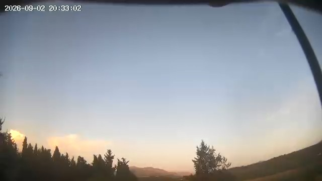

CÁMARA PROPIA
IMAGEN PROVISIONAL
🚧 EN CONSTRUCCIÓN
PRÓXIMAMENTE EN DIRECTO
El Silo · Archidona
Futura cámara meteorológica de MeteoArchidona para observar en tiempo real la evolución del cielo, nubosidad, precipitación y visibilidad desde Archidona.
Imagen provisional
Fotografía temporal de nuestra
webcam de Los Llanos. Será
sustituida por la emisión real
de El Silo cuando la cámara
entre en servicio.